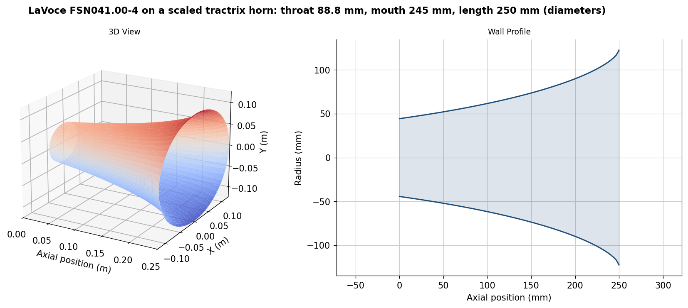
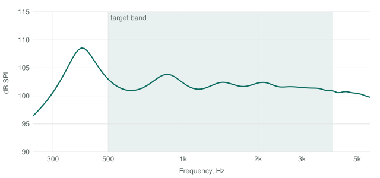
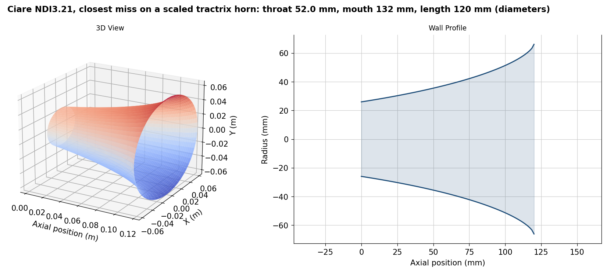
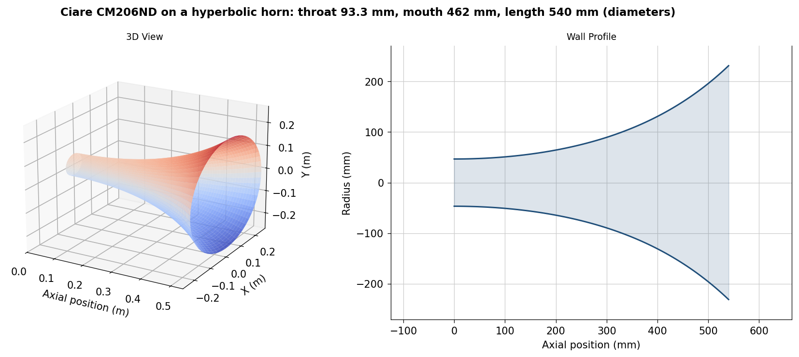
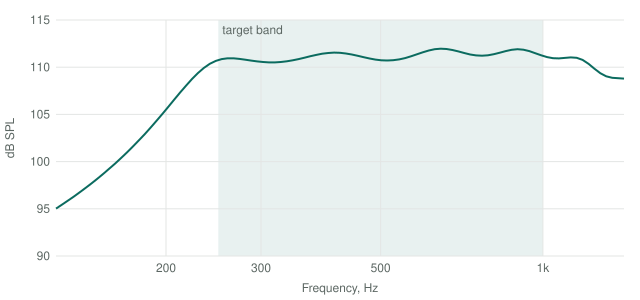
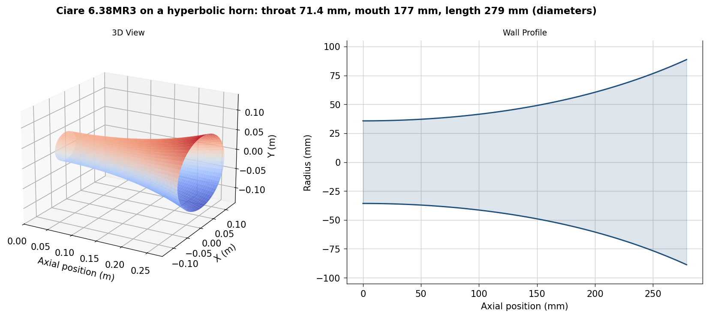
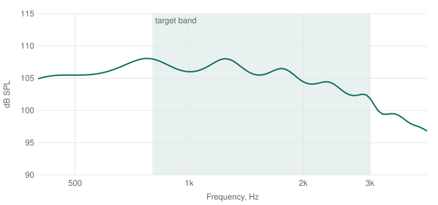
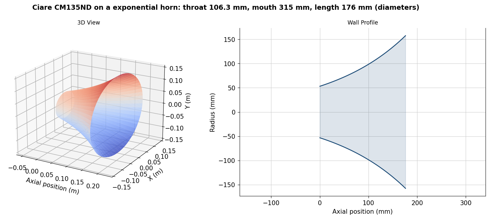
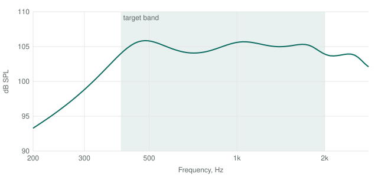

Examples
Five briefs, five answers
Each example starts from a brief a builder might write, runs it against the full database of 1454 drivers, and reports what came back. Not every brief has a clean answer. Those are shown as they are.
refinement/ranked_results.json or its report. Diameters are given unless a value says radius. The linked reports give radii. Levels are on axis at 1 m for 2.83 V. Terms are explained in horn basics.- Compact PA midrange horn
- Small hi-fi upper-mid waveguide (no answer)
- Large low-mid horn
- High-output vocal horn (does not strictly pass)
- Flattest possible midrange
- Runs that stopped and were rerun
- Runs no longer shown
1. Compact PA midrange horn
Why: a two-way PA top box, so the horn has to fit a typical cabinet.
Constraints
- Band 500 to 4000 Hz.
- Horn length at most 250 mm. Mouth diameter at most 350 mm.
- Ripple at most 3 dB.
- Default ranking: level first, then flatness.
python3 scripts/run_pipeline.py --mode auto --target_f_low 500 --target_f_high 4000 \
--max_length 0.25 --max_mouth_radius 0.175 --max_ripple_db 3 --mesh_size 0.006Result
Driver: LaVoce FSN041.00-4.
Horn profile: scaled tractrix (refine_scaled_tractrix_0004).


Why it won
Of the 11440 driver and horn pairs the 3D model scored, 11425 failed the 3 dB ripple limit. Among the ten stored ranked pairs, this is the only one that passes with or without the estimated front chamber (2.95 dB with it, 3.00 dB without). The other nine pass only if the chamber is left out, so they are flagged rather than rejected. The refinement step found this shape by widening the throat of an earlier candidate from 80.7 to 88.8 mm.
| # | Driver | Horn | Ripple (dB) | Mean (dB) | Score |
|---|---|---|---|---|---|
| 1 | LaVoce FSN041.00-4 | refine_scaled_tractrix_0004 | 2.95 | 101.9 | 0.750 |
| 2 | Ciare PM135ND | same horn | 4.04 | 101.9 | 0.728 |
| 3 | Ciare PM135ND | auto_sca_0237 | 4.97 | 102.5 | 0.697 |
Caveats
- It passes with only 0.05 dB to spare, and sits on the 250 mm length limit. Length is what holds it back.
- The cone is smaller than the throat (Sd/St 0.90), so there is no compression, and the throat is wide enough that sideways duct modes can propagate above about 2.3 kHz, inside the band. Treat the throat end as an adapter or phase plug question, not a finished design.
- The first attempt stopped on a solver check; see below. The rerun used a 6 mm mesh, which changes accuracy, not the brief.
Open the full report (2.0 MB).
2. Small hi-fi upper-mid waveguide
Why: a shallow waveguide that sits on a domestic speaker baffle.
Constraints
- Band 1000 to 8000 Hz.
- Horn length at most 120 mm. Mouth diameter at most 250 mm.
- Ripple at most 3 dB.
python3 scripts/run_pipeline.py --mode auto --target_f_low 1000 --target_f_high 8000 \
--drivers_db data/drivers --max_length 0.12 --max_mouth_radius 0.125 --max_ripple_db 3 \
--mesh_size 0.003Result: no design fits
All 3616 pairs the 3D model scored were rejected, every one for ripple. Nothing else failed. The closest miss:

There is no response plot, because nothing passed and the report only draws ranked pairs.
Why this is still a useful answer
The near misses all use the full 120 mm length and the widest throat the driver screen allowed. The mouth never came near its 250 mm limit; smaller mouths did better. So the length limit is what blocks a pass, not the mouth. If you can allow a deeper waveguide, or accept about 3.5 dB of ripple, try again. The Ciare NDI3.21 had the lowest ripple on every one of the 16 horns solved in 3D, so it is the driver to look at first.
| Closest misses | Horn | Ripple (dB) | Mean (dB) |
|---|---|---|---|
| Ciare NDI3.21 | refine_scaled_tractrix_0004 | 3.37 | 95.1 |
| Ciare NDI3.21 | refine_scaled_tractrix_0005 | 3.70 | 95.5 |
| Ciare NDI3.21 | refine_scaled_tractrix_0000 | 3.77 | 95.6 |
Caveats
- The f3 points of the closest miss sit on the ends of the sweep, so its real extension is unknown.
- The first attempt stopped on a solver check; see below. The rerun used a uniform 3 mm mesh and took about 98 minutes.
Open the report (0.3 MB). It lists the rejections and margins.
3. Large low-mid horn
Why: a three-way system where the horn takes over from the bass bin.
Constraints
- Band 250 to 1000 Hz.
- Horn length at most 600 mm. Mouth diameter at most 600 mm.
- Ripple at most 4 dB.
python3 scripts/run_pipeline.py --mode auto --target_f_low 250 --target_f_high 1000 \
--drivers_db data/drivers --max_length 0.6 --max_mouth_radius 0.3 --max_ripple_db 4Result
Driver: Ciare CM206ND, an 8 inch cone.
Horn profile: hyperbolic (refine_hyperbolic_0004).


Why it won
It has the highest level among the ten ranked pairs, with ripple well inside the 4 dB limit, and it extends below the band to 219 Hz. None of its dimensions is at a limit. All ten ranked pairs score within 0.02 of each other, so they are near ties. The real finding is a family: a hyperbolic horn with a mouth about 460 mm across, 540 to 600 mm long, and a midrange cone: an 8 inch CM206ND, or a 6 inch SICA 6M2CP at rank 6.
| # | Driver | Horn | Length (mm) | Ripple (dB) | Mean (dB) | Lower f3 (Hz) |
|---|---|---|---|---|---|---|
| 1 | Ciare CM206ND | refine_hyperbolic_0004 | 540 | 1.45 | 111.2 | 219 |
| 2 | Ciare CM206ND | refine_hyperbolic_0005 | 540 | 1.55 | 110.8 | 208 |
| 5 | Ciare CM206ND | refine_hyperbolic_0001 | 600 | 2.04 | 110.7 | 191 |
Rank 5, at 600 mm, reaches 191 Hz but has 2.04 dB of ripple.
Caveats
- The front chamber is estimated at 297.5 cm3. Here the estimate helps: without it the ripple is 2.54 dB, still inside the limit.
- The sweep stopped at 1414 Hz, so the real upper f3 is unknown.
- The first attempt ran out of memory in Nextflow while reading a 942 MB intermediate file. It was resumed with more memory (
NXF_OPTS="-Xms512m -Xmx8g") and finished. A full-database run with a wide geometry grid may need the same.
Open the full report (3.2 MB).
4. High-output vocal horn
Why: speech reinforcement, where level matters more than size.
Constraints
- Band 800 to 3000 Hz.
- At least 106 dB everywhere in the band at 2.83 V and 1 m.
- Survive a 50 W stress check: reject drivers that would pass Xmax.
- Horn length at most 400 mm. No mouth limit.
- Ripple at most 6 dB (the default).
python3 scripts/run_pipeline.py --mode auto --target_f_low 800 --target_f_high 3000 \
--drivers_db data/drivers --min_output_db 106 --test_power_w 50 --max_length 0.4 \
--mesh_size 0.008Result
Driver: Ciare 6.38MR3, a 6.5 inch cone.
Horn profile: hyperbolic (refine_hyperbolic_0002).


Why it came first
Every pair that does not depend on an estimated chamber was rejected for missing the 106 dB floor. The nearest of those fell 1.05 dB short. The 6.5 inch Ciare cones were the only drivers that got near the floor in a horn no longer than 400 mm. Refinement lengthened the best 3D candidate from 254 to 279 mm, which cut its ripple from 6.99 to 6.17 dB.
Without the estimated chamber the same pair gives a 107.6 dB mean and 2.29 dB ripple, and fails nothing. So the answer depends on how the driver is mounted: an adapter or phase plug that leaves little air in front of the cone is needed before this could work.
Caveats
- At 50 W the cone passes Xmax by 0.006 mm, at frequencies up to 879 Hz. That is inside the band, so a high-pass filter at 800 Hz would not fix it.
- The run checked excursion at 50 W but not the driver's power rating; the driver record has no power rating, so the power check could not run. The in-band input power at the 50 W setting is about 69 W.
- The mouth ended on the upper edge of the range the tool searched (177.4 mm), because no mouth limit was given. A larger mouth was not tried.
- The first attempt stopped on a solver check; see below. The rerun used an 8 mm mesh.
Open the full report (3.3 MB).
5. Flattest possible midrange
Why: a studio monitor midrange where a flat response comes first.
Constraints
- Band 400 to 2000 Hz.
- Ripple at most 2 dB.
- Horn length at most 400 mm. Mouth diameter at most 450 mm.
- Rank for flatness: score weights sensitivity 0.25, ripple 0.625, extension 0.125, size 0. The default swaps the first two.
python3 scripts/run_pipeline.py --mode auto --target_f_low 400 --target_f_high 2000 \
--drivers_db data/drivers --max_ripple_db 2 --max_length 0.4 --max_mouth_radius 0.225 \
--score_weights sensitivity=0.25,ripple=0.625,extension=0.125,size=0Result
Driver: Ciare CM135ND.
Horn profile: exponential (refine_exponential_0003).


Why it won
A 2 dB limit is hard: of 16448 pairs scored in 3D, only 21 escaped rejection, and at least 5 of the ten ranked are over 2 dB once the estimated chamber is included. The winner is not one of those. It holds 1.92 dB with the chamber and 1.94 dB without, and it is the loudest of the ranked pairs that stay under 2 dB with the chamber included. The flattest ranked pair was the Ciare PM135ND on the same horn at 1.85 dB, but it is 2.7 dB quieter. The top five are near ties.
The horn came out far smaller than the limits: 176 mm long against 400 mm, and a 315 mm mouth against 450 mm.
Caveats
- Only 0.08 dB of margin on ripple.
- The cone is smaller than the throat (Sd/St 0.91), so there is no compression, and the throat is wide enough for sideways modes to matter near the top of the band.
- Ranks 2, 3, 8, 9 and 10 exceed 2 dB with the estimated chamber and are kept only as flagged results.
- The sweep stopped at 2828 Hz, so the real upper f3 is unknown.
Open the full report (2.9 MB).
Runs that stopped and were rerun
Three of these briefs (the PA midrange, the hi-fi waveguide and the vocal horn) stopped on their first attempt with the error "Band boundary complex mouth_p mismatch; refine mesh". The solver splits the frequency sweep into bands and uses a finer mesh for higher bands. Where two bands meet, the results must agree. For a candidate in each run they did not agree, because the two bands used different mesh sizes, and the run stopped.
Each was rerun from scratch with a single, finer --mesh_size. That is a solver accuracy setting. It does not change the brief. The results on this page come from the reruns.
The crash is now fixed on the main branch: a candidate that fails this check is rejected with its reason instead of stopping the run. The run now finishes, but those candidates are rejected, and the summary says the mesh is the cause. For these briefs a smaller --mesh_size is still needed to get a design. The low-mid run stopped for a different reason, a Java memory limit, described in its caveats.
Runs no longer shown
Earlier versions of this site showed two more runs. Neither produced a design that meets its brief, so their reports have been removed:
- 800 to 1600 Hz at 140 dB (run
20261117T044425Z-a28f31bf). A deliberately impossible request, used to show the rejection table. The best pair was about 40 dB short. It shows the rejection report working, but it is not a design. - 18Sound 6NMB420, 320 to 5000 Hz, 300 mm long (run
20261117T083223Z-24deb54e). Every design went over the 6 dB ripple limit once the estimated front chamber was included, with 13.1 dB for the top one. It was ranked only because the failure came from an estimate. Without the chamber the same horn gives 4.9 dB, so the outcome depends on a real, measured adapter.
The hi-fi example above also found no design. It stays because it answers its brief: with these limits nothing fits, and the report says which limit to relax.